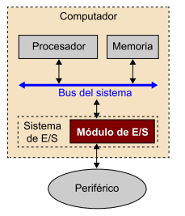

Cuando hablamos de E/S de información entre un computador y un periférico lo hacemos siempre desde el punto de vista del computador. Así, decimos que es una transferencia de entrada cuando el periférico es el emisor de la información y tiene como receptor el computador (procesador o memoria) y decimos que es una transferencia de salida cuando el computador es el emisor de la información y tiene como receptor el periférico. De manera más concreta, toda operación de E/S que se lleva a cabo entre el computador y un periférico es solicitada y gobernada desde el procesador, es decir, es el procesador quien determina en qué momento se debe hacer y con qué periférico, si la operación es de lectura o escritura, qué datos se han de transferir, y también quién da la operación por acabada.
Para llevar a cabo la operación de E/S, se a de conectar el periférico al computador. Para hacerlo, es necesario que el computador disponga de unos dispositivos intermedios por donde ha de pasar toda la información que intercambia el computador con el periférico y que permite hacer una gestión y un control correctos de la transferencia. Estos dispositivos son llamados de manera genérica módulo de E/S.
sistema de entrada / salida (part I)
Para llevar a cabo la operación de E/S, hemos de conectar el periférico al computador. Para hacerlo, es necesario que el computador disponga de unos dispositivos intermedios por donde ha de pasar toda la información que inter- cambia el computador con el periférico y que nos permite hacer una gestión y un control correctos de la transferencia. Estos dispositivos los llamamos de manera genérica módulo de E/S.

Un módulo de E/S es un controlador de uno o varios periféricos que establece una interfaz entre el periférico y el computador (procesador y memoria) para facilitar la comunicación entre el uno y el otro de manera que buena parte de los detalles técnicos del periférico queden ocultos al resto del computador.
direccionamiento de módulos e/s (part III)
Todos los computadores deben gestionar más de un periférico y estos pueden trabajar al mismo tiempo; por ejemplo, estamos imprimiendo un documento que tenemos guardado en el disco mientras escribimos un texto con el teclado que se muestra por pantalla. Por lo tanto, hemos de prever que nuestro sistema de E/S pueda gestionar transferencias de E/S con dos o más periféricos simultáneamente. Eso quiere decir que de manera simultánea dos o más módulos de E/S deben estar preparados para hacer la transferencia de datos con el procesador, pero la transferencia no la podemos hacer al mismo tiempo. Por este motivo, hemos de disponer de un sistema que, primero, nos permita determinar cuáles son los módulos a los que tenemos que atender (identificar los módulos de E/S que están preparados para la operación de E/S) y, segundo, nos permita decidir a quién atendemos primero, teniendo en cuenta que si ya atendemos a otro periférico o hacemos otra tarea más prioritaria no la podemos interrumpir (establecer una política de prioridades).
Las técnicas de E/S que requieren una dedicación importante del procesador (ejecutar un fragmento de código) para hacer simples transferencias de datos. Si queremos transferir bloques de datos, estas técnicas todavía ponen más en evidencia la ineficiencia que tienen. En E/S programada implica que el procesador no pueda hacer nada más y en E/S por interrupciones descargamos el procesador de la sincronización a costa de hacer las rutinas de atención más largas para garantizar el estado del procesador, lo que limita la velocidad de transferencia.